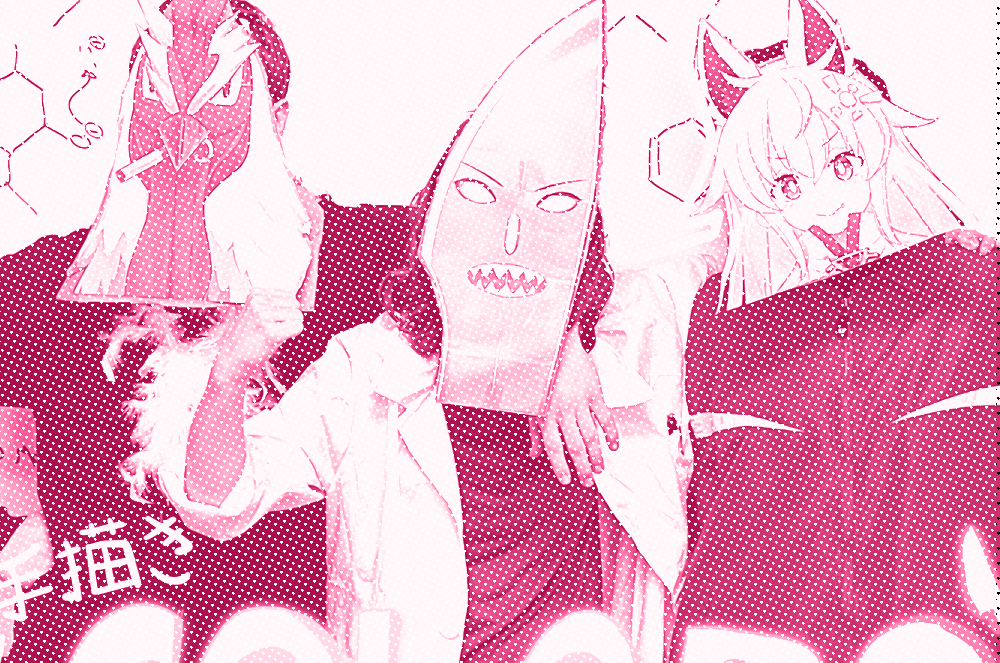

about me

A (slightly haphazard) extended introduction
As of late this website has been garnering some traffic. My goal with all of my websites has always been to house everything I find and write about online that I think is cool/interesting (and many of these pages do exist in the archives) but amidst a summer internship, a summer class, and now being back to school full-time, the overhaul hasn't happened. Every time I try to update, I write too much.
On that note...
How did apt get into computing? Why does she care about this stuff?
I don't remember a world before the internet, but my earliest memories of the internet are of a different network than the one we use today.
My earliest childhood experiences with technology involve Windows XP, episodes of Star Trek, chess, Sim City 3000, and a DVD about the Space Shuttle I watched too many times. When I started paying attention to the bumpers on WTTW Kids, I ventured onto the internet for the first time. Later on, I would find countless passions through forums, distinctly homemade Flash files, and YouTube videos.
To put it a different way, the idealized version of the connected world that was presented to me in media and in my education, a user-driven place where community could blossom, science would strengthen, and borders between people could shrink, is the one that I really wanted, and still want, to see. The hostname of the family PC was carefully deliberated upon every time it was updated. My friends at school were never in the same neighborhood as me, so I would hang out with them after school in virtual worlds. I grew up percieving modern technology as something that could be sincerely touching, and impactful, when done right.
What brought me here
Early in elementary school, I got interested in the O'Reilly books with strange animals on the family bookshelf, and other texts with baffling names such as "The Linux Cookbook". At the time all of it went over my head, but eventually I finally made progress when a family member gave me a book about Python 2, and with the Apple II//c (Zork!) that I discovered in my dad's old closet at my grandpa's house. I'm really lucky the adults in my life paid attention and made these simple gestures that let me explore something that really ended up benefiting me. My first IDEs were IDLE and Stani's Python Editor, which feels like ancient history now. It's the age-old story: I was hooked. Combined with my introduction to robotics through a school assembly, and a grant my girl scout troop recieved to participate in FIRST Lego League, my time after school was quickly becoming devoted to the computer.
The next foundational experience in this realm for me was definitely the shift to laptop computing in schools. Suddenly, in 4th grade, the school computer lab wasn't something we were visiting as much anymore, and so I begged my parents for a laptop. My dad finally relented and gave me an old machine, with one catch: the computer would run Linux instead of Windows.
At first I struggled with Linux, and especially Wine, but the eventual result of this experiment on my dad's part is that I effectively instantly became a full-time linux user and would end up with job prospects and CTF wins thanks to my trial-by-unix-fire. Thanks dad.
The next major shift in the world that brought me to where I am today was the sudden and massive popularization of Arduino, which in my opinion is responsible for bringing an understanding of electronics to probably an incomprehensible number of people. I messed with arduino through middle school and additionally discovered amateur radio, which pushed me to join the electronics sub-team of my robotics team in high school. Additionally, at the end of my middle school career, my childhood obsession with the Sony AIBO social robotics platform would finally come full circle when I was loaned one to develop software for it.
High school was marked primarily with my participation and leadership of that robotics team, FRC 4645, and lots of personal projects. FRC changed my life in a number of ways. It built my confidence, helped me dismantle my social anxiety, and taught me how to manage a project. But most importantly, it showed me again how technology could bring people together in very impactful ways.
Present day
Suddenly, I'm in college. What I'm doing now is: studying electrical engineering and robotics, leading and participating in our radio club, working with our rocketry team to come up with cool new ways to talk to payloads, and working in residence life. Plus, I've suddenly had a lot of opportunities to explore the things I'm passionate about in the professional world and have met a lot of amazing people that I know also know what it's like to be sincerely inspired by technology.
School is not easy, but if it were easy, everybody would do it, or so I'm told. I want to live in a future where people and technology coexist-- and where new technologies are built with a real intention to enhance people's livelihoods and inspire wonder. I think computing technology, and all of the technologies I'm interested in are capable of this, so I'll keep going!
Technical interests
There are too many, listed in no particular order.
- Social robotics, human-centered computing
- RF technology and communications
- Satellites and smallsats
- Amateur radio, analog transmitters
- SDR, digital modulation
- Free and open source software, software ethics
- Linux and unix-like systems, networking
- Embedded systems, microcontrollers
- Cybersecurity and reverse engineering
- Having fun with technology!
Non-technical interests
"Non-technical" is kinda tenuous considering how many of these overlap with technology in some way. Some of them just straight-up are technology-related, but my interest in these has more to do with art or culture than engineering.
-

- Illustration, character design, animation, and comics (doing it myself)
- Video projects, video editing
- Voice synthesis, especially singing synthesizers. (VOCALOID, VOICEVOX, CeVIO, SynthesizerV, etc)
- Internet culture, history, and memes. The effects (positive and negative) of the internet on the real world and how the network has changed (isn't that a whole can of worms)
- Language learning
- Wikis, citizen science, collaboration!
- Art made by other people. I like slice-of-life and sci-fi anime (although I must stress that I'm not an anime nerd, I'm an internet nerd), and good movies. Favorite 2D animations include Dennou Coil, Steins;Gate, Serial Experiments Lain, and Summer Wars. Favorite movies include Wargames, 2001 and Wall-E.
- Video games (JRPGs, simulation games, rhythm games), TCG (Digimon, Pokemon, Magic), and tabletop with friends and family.
- Useful advocacy in my community
- Riding my bike, hiking, camping
- Playing bass
- Watching storms
Connection closed
More to come, but for now, feel free to email me at
ａｐｔ＠ａｓｃｉｉ．ｇａｒｄｅｎ (retype it)
the song recommendation is: sm41189586